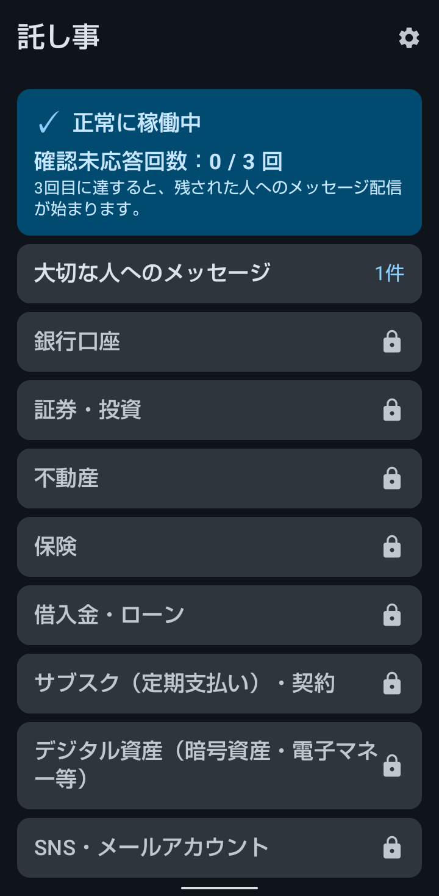
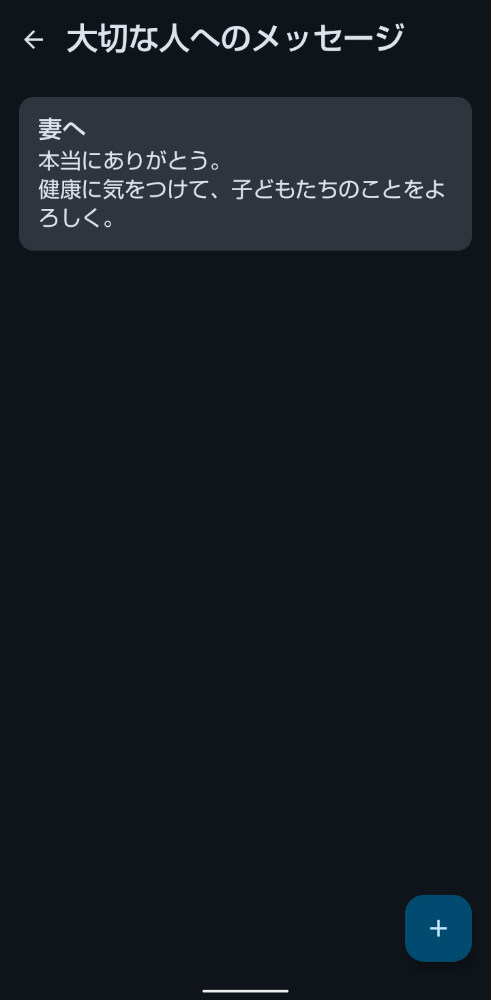
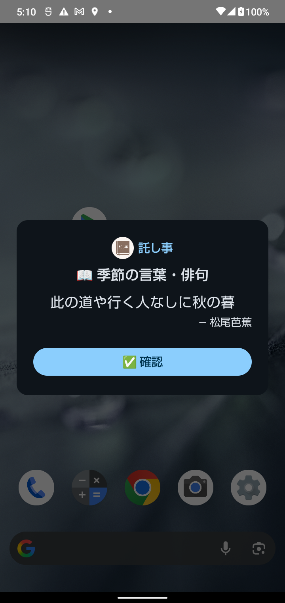
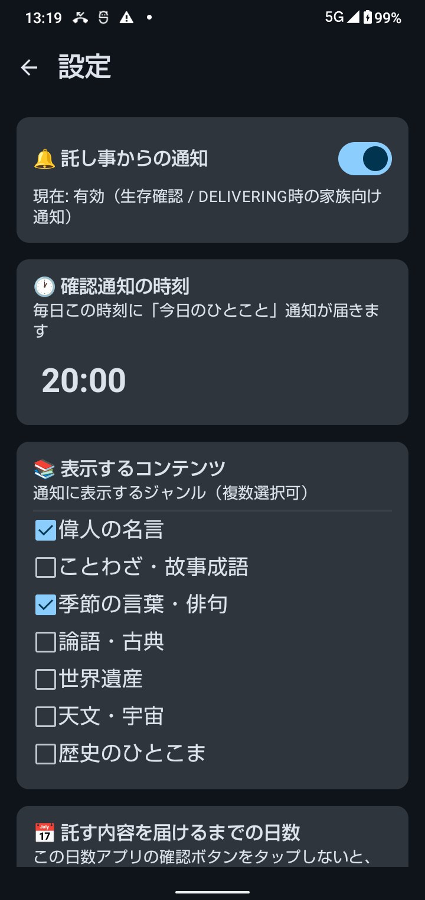
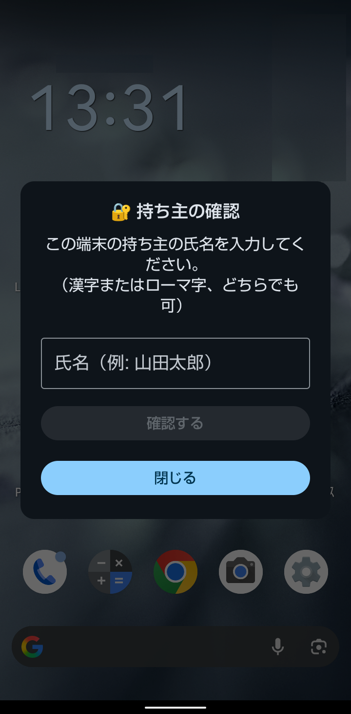
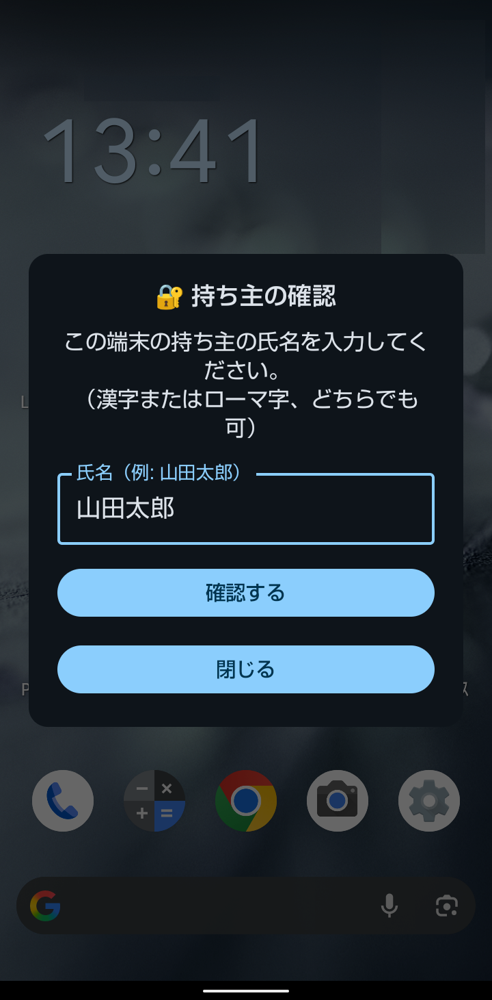
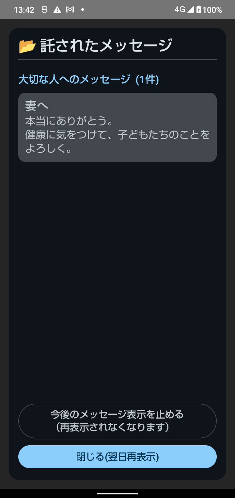

託し事（たくしごと） 使い方ガイド
最終更新: 2026-06-22 / Doster Studio
託し事は、あなたが亡くなった後にご家族がこのスマートフォンを起動したとき、あなたが残したメッセージや終活情報を自動的に表示するアプリです。毎日の「今日のひとこと」をタップして元気でいることを伝え、もし確認が一定期間とれなくなったら、残された大切な人へ託したいことを届けます。登録した内容は、この端末だけに保存されます。
1. 託し事とは（仕組み）
託し事は「デジタルのエンディングノート」です。銀行口座や保険などの大切な情報、そして残された大切な人へのメッセージを書き留めておくと、万が一のときにその内容が届きます。
3つのステップで動きます
- 書き留める：メッセージや資産・契約の情報を登録しておきます。
- 毎日タップして元気でいることを伝える：毎日届く「今日のひとこと」通知の「✅ 確認」をタップすると、その日あなたが元気でいることが記録されます。
- 届ける：設定した日数（初期設定は3日）この確認がとれなくなると、アプリが自動で切り替わり、ご家族がこの端末を開いたときに、あなたが残した内容を表示します。

ホーム画面：上部に稼働状況、下にカテゴリ一覧が並びます
情報はこの端末だけに保存されるため、登録した内容が開発者や第三者に送られることはありません。開発者がその内容を見ることもできません。詳しくは
プライバシーポリシーをご覧ください。
2. 最初の設定
アプリを初めて起動すると、5つのステップで初期設定を行います。
設定の5ステップ
- ようこそ：仕組みの説明です。前のスマホから引き継ぐ場合は、ここでバックアップファイル（JSON）を読み込めます（→ 第6章）。
- お名前の登録：あなたの氏名と、そのローマ字表記を登録します（下記）。
- 届けるまでの日数：何日間、確認がとれなければ家族へ届けるかを選びます（毎日／2〜10日。標準は3日）。
- 表示するコンテンツ：毎日の通知に出す「今日のひとこと」のジャンルを選びます（偉人の名言・ことわざ・故事成語・季節の言葉/俳句・論語/古典・世界遺産・天文/宇宙・歴史のひとこま の7ジャンル計900件以上、複数選択可）。
- 通知とアラームの許可：通知と「正確なアラーム」の許可を行います。これが無いと生存確認も配信も動きません。
お名前は「氏名」と「ローマ字」の両方を登録します
ご家族がメッセージを開くときに、この氏名を入力して認証します（名前を知っている方だけが読める仕組み）。
ローマ字の氏名も必須です。スマートフォンは電源を入れ直した直後や電池切れからの復帰後（ロック解除前）は日本語入力ができないことがあります。その状態でもご家族が確実に開けるよう、ローマ字も登録します（「shi / si」「tarou / taro」などの表記ゆれは自動で吸収されます）。
これらの設定は、あとから設定画面でいつでも変更できます。
3. 託す内容を登録する
ホーム画面のカテゴリをタップし、右下の「＋」ボタンから内容を登録します。次の14カテゴリに分けて残せます。
登録できるカテゴリ
- 大切な人へのメッセージ
- 銀行口座 ／ 証券・投資 ／ 不動産 ／ 保険 ／ 借入金・ローン
- サブスク（定期支払い）・契約 ／ デジタル資産（暗号資産・電子マネー等）
- SNS・メールアカウント ／ 重要書類の保管場所
- 葬儀の希望 ／ 連絡してほしい人 ／ ペット ／ その他
無料版とプレミアム版の違い（登録できる内容）
無料版とプレミアム版では、登録できる内容の量が大きく変わります。
- 無料版：上記のうち「大切な人へのメッセージ」を1件だけ登録できます（タイトル10文字・本文50文字まで）。まずはこの1件で、生存確認から残された大切な人への配信までの流れを体験できます。銀行口座や保険などの資産カテゴリは、ロックされていて登録できません。
- プレミアム版（¥2,000 買い切り）：14カテゴリすべてに、件数無制限・文字数無制限で登録できます。銀行・証券・保険・不動産といった資産情報や、複数の方へのメッセージを残せるのはプレミアム版です。月額料金はなく、一度の購入でずっと使えます。
つまり「本格的にエンディングノートとして使う」にはプレミアム版をおすすめします（料金・購入方法は第6章を参照）。

「大切な人へのメッセージ」を登録した例
暗証番号・パスワードは書かないでください
託し事は「資産や契約がどこに、どんな形であるか」をご家族に伝えるためのアプリです。銀行・証券・各種サービスの暗証番号やログインパスワード、クレジットカードの暗証番号など、それ単体で不正利用できる情報は入力しないでください。
このアプリでの認証方法は「持ち主の名前」の入力という簡単な方法です。そのため入力された情報は、端末の紛失・盗難の際や、書き出したファイル（PDF・引き継ぎ用データ）の管理を誤った際に、第三者の目に触れるおそれがあります。また暗証番号やログインパスワード、クレジットカードの暗証番号などは通常の相続手続きには必要ありません。「通帳は仏壇の引き出し」「証券はSBI証券」のように、在り処だけを書くのが安全で確実な使い方です。
各カテゴリの入力欄には、書き方の例（プレースホルダー）が表示されます。迷ったら参考にしてください。
4. 毎日の生存確認
託し事の心臓部です。毎日届く「今日のひとこと」通知の「✅ 確認」をタップすることで、あなたが元気でいることが記録されます。
毎日の流れ
- 設定した時刻（初期は20:00）に「今日のひとこと」が通知で届きます。
- 通知、またはロック画面に出るカード（アプリ名と名言が表示されます）の「✅ 確認」をタップします。
- その日の生存が記録され、ホーム画面の「確認未応答回数」が0に戻ります。

ロック画面に届くカード：その日のひとことと「✅ 確認」ボタンが表示されます
この「✅ 確認」をタップしない日が、設定した日数だけ続くと、アプリは「持ち主にもしものことがあった」と判断し、残された大切な人への配信モードに切り替わります。旅行や入院などでしばらく確認できない予定があるときは、設定画面の「託し事からの通知」を一時的にオフにするか、判定日数を長めにしておくと安心です。
「毎日」設定を選んだ場合は流れが異なります。この設定では「今日のひとこと」の確認通知そのものが届かず、毎日の設定時刻に直接お届けモードへ切り替わります。切り替わったら、ホーム画面の「私は元気です（通常モードに戻す）」を毎日タップして戻す使い方になります（配信画面の「閉じる」をタップするだけでも翌日まで表示を止められます）。日々の操作が増えるため、通常は2日以上の設定をおすすめします。
ホーム画面の上部には「正常に稼働中」「確認未応答回数：◯ / ◯ 回」が表示され、あと何回で残された大切な人へ届く状態になるかが一目で分かります。
5. 各種設定・動作確認
ホーム画面右上の歯車アイコンから設定画面を開きます。

設定画面：通知のオンオフ・時刻・コンテンツ・判定日数などを変更できます
主な設定項目
- 託し事からの通知：オフにすると生存確認の通知が止まります（長期の入院・旅行時などに）。
- 確認通知の時刻：「今日のひとこと」が届く時刻。
- 表示するコンテンツ：通知に出すジャンルの選択。
- 託す内容を届けるまでの日数：何日の未確認で配信に切り替えるか。
- お名前・ローマ字：家族認証に使う氏名の変更。
動作確認（テストモード）
「本当に家族へ届くのか」を実際に体験して確かめられる機能です。テストモードをオンにすると1日＝5秒に短縮され、「生存確認 → 家族への配信 → メッセージ表示」の一連の流れを数十秒で確認できます。
テスト中に表示される配信画面には「🧪 テストモードを終了する」ボタンがあります。確認が済んだら、その場ですぐにテストモードを終了できます。
6. バックアップ・機種変更・有料版
データのバックアップと機種変更
設定画面の下部に、2種類の書き出し機能があります。
- 📦 データの引き継ぎ：設定・登録した内容をファイル（JSON）に書き出し、新しいスマホで読み込めます。機種変更のときに使います。
- 📄 PDF エクスポート：登録した項目をPDFにまとめて書き出します。端末故障時のバックアップや、紙で残しておく用途に。
書き出したファイル（PDF・引き継ぎ用データ）には、登録した内容がそのまま記録されており、暗号化はされていません。メールへの添付や、共有のクラウド・他の人が見られる場所への保存は避け、保存先の管理に十分ご注意ください。不要になったファイルは削除することをおすすめします。
データはクラウド（Googleアカウント）へは自動保存されず、お使いの端末の中だけに保存されます。機種変更の際は、Android標準の端末間データ転送機能（新旧端末を直接つないで移行する機能）で引き継げます。
無料版と有料版
- 無料：「大切な人へのメッセージ」を1件登録でき、生存確認から家族への配信まで一通り体験できます。
- プレミアム（¥2,000 買い切り）：全14カテゴリ・件数無制限・文字数無制限。一度の購入でずっと使えます（月額はありません）。
ここから先（第2部）は、ご家族向けの説明です。
このページをブラウザの印刷機能でPDF化・印刷し、ご家族に渡しておくこともできます。万が一のとき、ご家族がスムーズに受け取れるよう、生前にこの仕組みを共有しておくことをおすすめします。
7. 【残された大切な人へ】メッセージの受け取り方
このスマートフォンの持ち主から、あなたへ託された内容があります。落ち着いて、以下の手順でお受け取りください。特別な操作や、スマホのロック解除（暗証番号）は必要ありません。
受け取りの手順
- 画面にメッセージのお知らせが表示されます。
この端末を操作すると、ロック画面に「✉️ 託されたメッセージ」というお知らせが表示されます。「開く」を押してください。
- 持ち主のお名前を入力します。
「持ち主の確認」画面が出ます。この端末の持ち主（亡くなった方）のお名前を入力し、「確認する」を押してください。漢字でも、ローマ字でも構いません。
- 託された内容が表示されます。
メッセージや、資産・契約・連絡してほしい方などの情報が一覧で表示されます。

手順2：持ち主のお名前を入力する画面

お名前を入力し「確認する」を押します

手順3：託された内容が表示されます
「閉じる」を押しても、翌日また自動でお知らせが表示されます。他のご家族がまだ見ていない場合に備え、すぐに止めたいとき以外は、そのままにしておいて構いません。
お名前は、その持ち主と親しいご家族なら必ずご存じの情報です。もし入力してもうまくいかない場合は、漢字とローマ字を切り替えて試してみてください。それでも開けないときは、下記サポートまでご連絡ください。
8. よくある質問・お問い合わせ
よくある質問
Q. インターネットに接続していなくても動きますか？
A. はい。託し事はすべて端末内で動作し、通信を行いません。圏外でも生存確認・配信は機能します。
Q. 登録した内容は開発者に見られますか？
A. いいえ。データはこの端末だけに保存されるため、開発者を含む第三者が見ることはできません。
Q. しばらくスマホを触れない予定があります。
A. 設定画面で「託し事からの通知」を一時的にオフにするか、「届けるまでの日数」を長めに設定しておけば、誤ってお届けモードに切り替わることはありません。
Q. 間違ってお届けモードになってしまいました。
A. アプリを起動すると、ホーム画面の上部に「📨 現在『お届けモード』になっています」というカードが表示されます。その中の「私は元気です（通常モードに戻す）」ボタンをタップすれば、通常モードに戻ります。